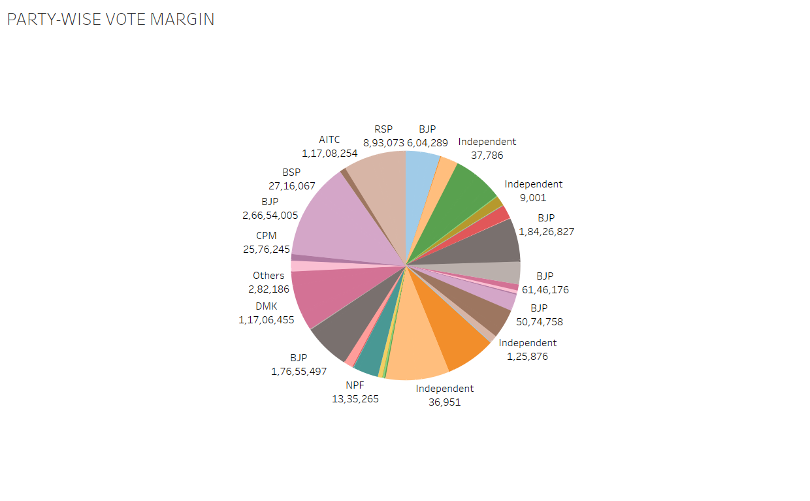
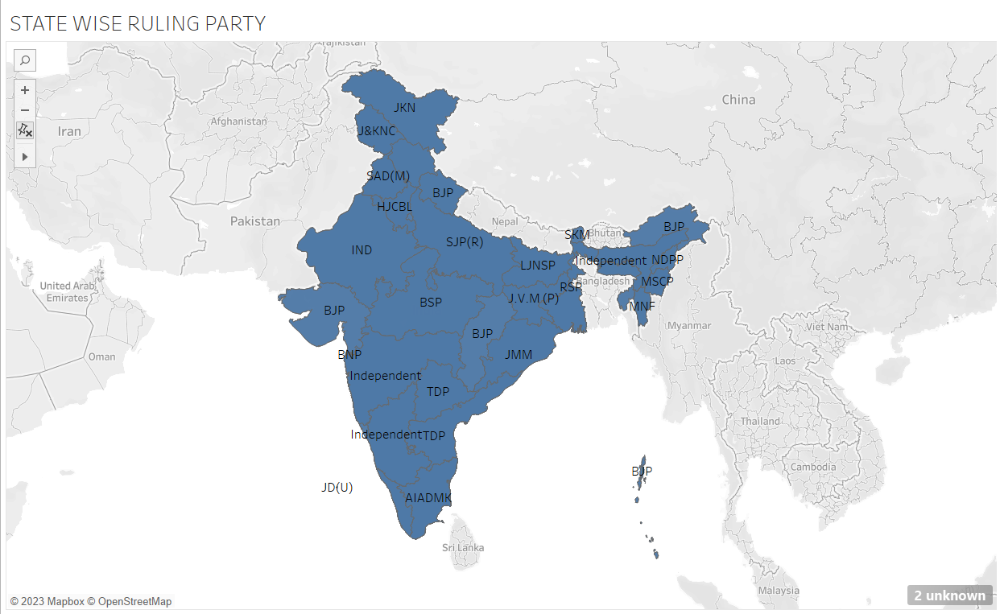
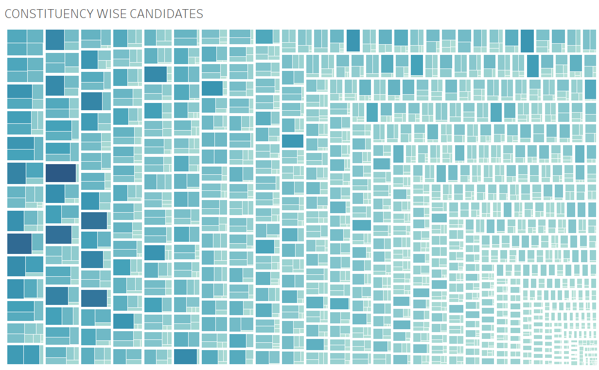
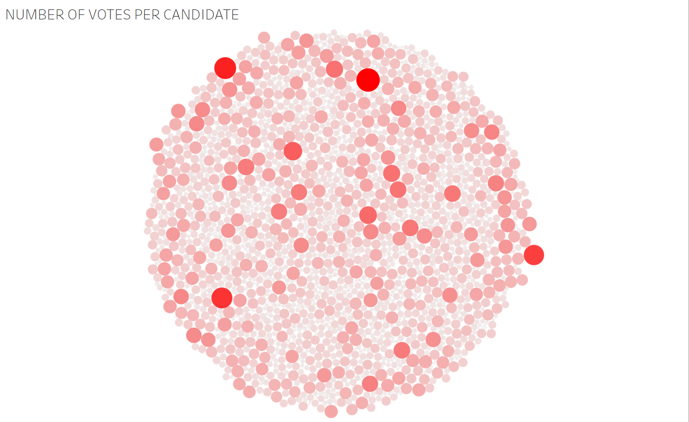

18CSE301J INFORMATION VISUALIZATION
SRIJAN CHAKRAVORTY(RA2011029010001)
Assignment 1
I have done the documentation part of the report of in the Overleaf website by using the dataset of Layoff Scenario in India.The dataset basically contains information about parameters such as company name,total number of employees in a company,cause for firing employees,sector to which the companies belong,total number of employees fired and what percent did they constitute.
Overleaf link of the report is attached here Click Here
Assignment 2
TABLEAU PROJECT
The Below Data is visualised and it provides the information of Elections in India.
The image depicted below is a pie chart which shows party wise vote margin.

The image depicted below is a geographical map which shows state wise ruling party

The image depicted below shows constituency wise candidates.

The image depicted below shows number of votes per candidate.

Data Visualization using Python
Data Description
I have taken the datset of Covid-19 issued by WHO for my data visualisation and for the text visualisation I have taken our honorable Prime Minister's G20 Summit addressing speech.
Libraries Used
1.Pandas
2.NumPy
3.Matplotlib
4.Seaborn
5.Plotly
These libraries provides a powerful set of tools for data visualization in Python which allows us to create a wide range of charts
and visualizations to explore and communicate their insights.
Code
Colab Link for data vizualisation.
Colab Link for text vizualisation
Refrences
1.Plotly for interactive data visualization
2.Data preprocessing
3.Youtube video for Tree Map
Data Visualization Using D3
Code
The Code for the below output is uploaded in observablehq
Output
It is a Bar Chart in which the bars represent the price of crude oil every year from 1974-22.
The Code for below output is uploaded in observablehq
Output
It is a D3 scatterplot in which dots represent price of crude oil every year from 1974-22.
Refrences
1.Explaination of D3 ChartS
2.D3 Document
3.D3 Graph Gallery
4.Dataset for the about Output
Data Visualization using Gephi
Data Description
The nodes csv contains 327 different Marvel characters, and the edges csv contains 9,891 weighted relationships between those characters, which were calculated based on how many times two characters appeared together in the same comic book.
To explore and understand the edges better, you might take a look at the bimodal edges list and the comic book key from the Marvel Chronology Project. For more on the methodology, see Rosselló, Alberich, and Miro's original article.
*In order to make this data more accessible for basic social network analysis, I have condensed the network from 6,486 characters to only the top 327 most connected characters, who are connected to at least 8 other characters and with whom they appear in at least 5 different comic books.
The SVG Image

Refrences
1.Youtube Video For Gephi
2.Dataset of the Visualised Data